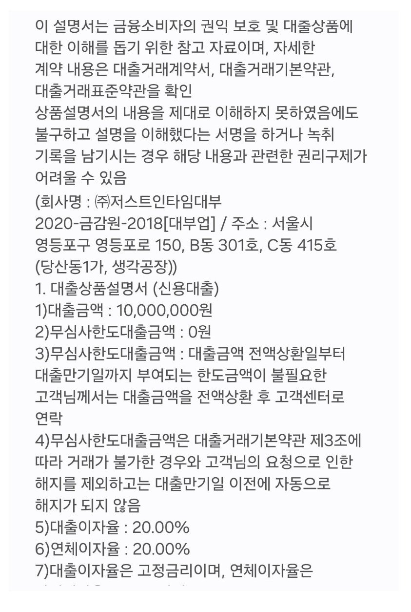

[개인회생자대출 ] 급여압류로 인가결정이지만 납부2회차에 대출을 진행... 재회생이고 급여압류 사건이있어서인지 ..

재직형태 : 직장인
재직기간 : 19년
사대보험 :유
소득 :8200
회생중채무:없음. 인가결정. 납부2회차
급여압류로 인가결정이지만 납부2회차에 대출을 진행하였습니다. 납부금이 총 금액의 절반이 조금넘었는데 재회생이고 급여압류 사건이있어서인지
4군데 접수해서 다행히1군데 대출이나왔네요
납부회차 길어지면 다시부탁드립니다
https://cafe.naver.com/cityman88/311895